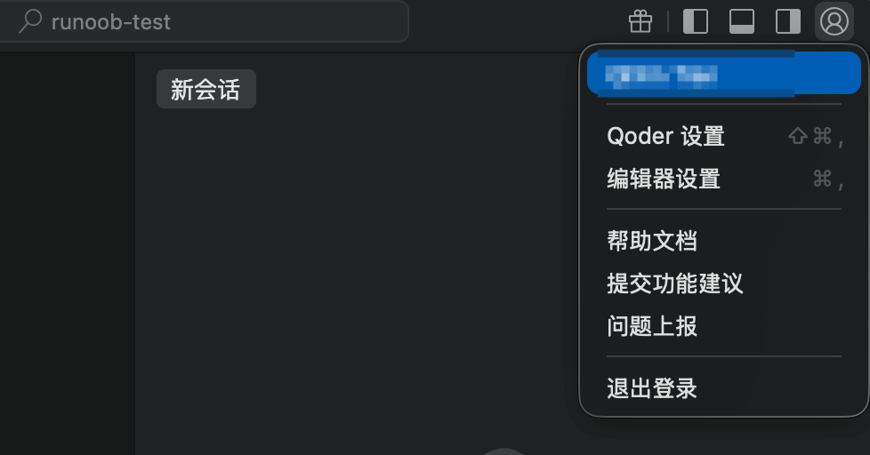
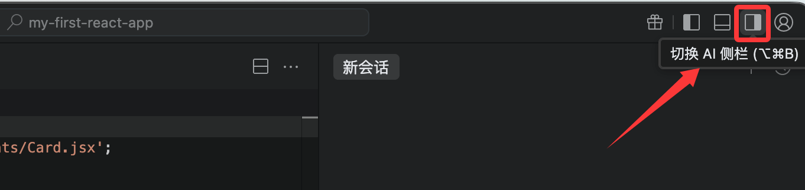

Qoder で React を開発する
Qoder は VSCode のオープンソースフレームワークを基に作られた AI プログラミングプラットフォームです。この章では、Qoder を使用した React 開発について紹介します。
Qoder（/ˈkoʊdər/）は、実際のソフトウェア開発向けの Agentic コーディングプラットフォームです。拡張されたコンテキストエンジニアリングとエージェントをシームレスに組み合わせ、コードベースを完全に理解し、システム化された方法で開発タスクを推進します。
Qoder は、コードのインテリジェント生成、スマートQ&A、複数ファイルの修正、プログラミングエージェントなどの機能を提供し、より深い思考、より効率的なコーディング、より優れた構築を実現します。開発者に効率的でスムーズなコーディング体験をもたらします。
Qoder 個人版は現在、すべてのユーザーに無料トライアルを提供しています。
1、Qoder に登録してインストールする
アクセスしますhttps://qoder.com/QoderWork アカウントを登録します（Pro 版を無料トライアルでき、300 クレジットが贈呈されます）：

登録が完了したら、右上隅のダウンロードボタンをクリックし、お使いのコンピューターのシステムに応じてインストーラーをダウンロードします。

ダウンロード後、ファイルをダブルクリックしてインストールを開始し、その後 Qoder IDE アイコンをダブルクリックして Qoder を起動します。
関連リンク：
- Qoder 公式サイト：https://qoder.com/
- Qoder ドキュメント：https://docs.qoder.com/zh/quick-start
- Qoder コマンドラインツール：https://docs.qoder.com/zh/cli/quick-start
2、Qoder にログインする
Qoder IDE の右上隅でユーザーアイコンをクリックするか、キーボードショートカット（⌘ ⇧ ,（macOS）または Ctrl Shift ,（Windows））を使用して、「ログイン」を選択します。

まだアカウントをお持ちでない場合は、開いたウェブページの下部にある今すぐ登録リンクからアカウントを登録するか、Google または GitHub アカウントを使用して直接登録できます。

ログインに成功すると Qoder IDE に戻り、すべての機能を自由に使用できます。

インターフェース全体を見ると、Qoder の操作は VS Code と基本的に変わりません。Qoder 自体が VSCode を基に作られているため、VS Code に慣れている方ならすぐに使いこなせます。
React プロジェクトを開く
-
Qoder を開きます。
-
方法1：メニューファイル → フォルダーを開くを選択し、プロジェクトフォルダーを選択します（例：
my-first-react-app）。 -
方法2（推奨）：ターミナルでプロジェクトディレクトリに移動し、ワンクリックで開く：
cd my-first-react-app qoder .
qoder .このコマンドは現在のフォルダーを Qoder で直接開きます。
左側のファイルエクスプローラーにプロジェクト構造（src、public など）が表示されます。

3、新しいチャットを開始する
スマート会話パネルを開く
AI 対話を開始するには、Qoder にログインし、右上隅でセカンダリサイドバーに切り替えます。

またはキーボードショートカットで開きます。macOS のショートカットは⌘ L、Windows のショートカットはCtrl L。
モードを選択：
- スマートQ&A：プログラミングの問題に答えるためのシンプルなQ&Aモードです。コンテキストに基づいて解決策や提案を提供しますが、コードは変更しません。
- エージェント：自律のにコーディングタスクを実行するモードで、自己決定、環境認識、ツール使用の能力を備えています。開発者のコーディング要件に応じて、プロジェクト検索、計画立案、ファイル編集、端末操作などのツールを活用し、コーディングタスクをエンドツーエンドで完了します。さらに、開発者が設定可能な MCP（Model Context Protocol）ツールもサポートしており、コーディングワークフローを個人の開発プロセスに高度に適合させます。

次に、エージェントモードを使用して、プロジェクト全体のスタイルを最適化してもらいましょう：
プロジェクト全体のスタイルを最適化する

すると Qoder が一連の操作を行い、修正を開始します。完了したら、受け入れるボタンをクリックします：

その後、Qoder に完了結果が表示されます：

さらに、Qoder には Quest モードもあります。これは Qoder の自律プログラミング機能で、Agent が開発タスクをエンドツーエンドで完了します。目標を説明するだけで、Quest が要件の明確化、計画の立案、コードの実行、結果の検証を自律的に行います——継続的な手動介入は不要です。
Quest モードを使用するには、左上で切り替えるだけです：

4、必須プラグイン（Extensions）をインストールする
Qoder もプラグインのインストールに対応しています。左側のアクティビティバーのExtensionsアイコン（4つの正方形）、またはショートカットキーCtrl+Shift+X（macOS: Cmd+Shift+X）を押して拡張機能マーケットを開きます。

以下のプラグインを検索してインストールします（Install をクリック）：

-
ESLint（作者：Microsoft）
- コード規約をリアルタイムでチェックします。React 公式推奨。
- インストールすると、コード内のエラーが赤く表示されます。
-
Prettier - Code formatter（作者：Prettier）
- コードを自動フォーマットし、スタイルを統一します。
-
ES7+ React/Redux/React-Native snippets（作者：dsznajder）
- コードスニペットの神ツール！ショートカットを入力するだけでコンポーネントをすばやく生成できます。
- 一般的なスニペット：
rafce→ アロー関数コンポーネント + export default を生成rfc→ 関数コンポーネントを生成useState→ useState をすばやく生成
-
Path Intellisense（作者：Christian Kohler）
- インポートパスの自動補完（import のときに非常に便利です）。
-
Bracket Pair Colorizer 2または内蔵の括弧の色分け
- 括弧が色分けされ、ネストされた JSX を読みやすくします。
-
GitLens（任意ですが、強く推奨）
- Git を強化し、コードのコミット履歴を確認できます。
React 専用のおすすめ（任意・上級者向け）：
- Tailwind CSS IntelliSense（Tailwind を使用する場合）
- React Developer Tools（ブラウザプラグインはインストール済みのため、ここでは不要です）
インストールが完了したら、Qoder を再起動します（またはCtrl+Shift+P → Reload Window）。